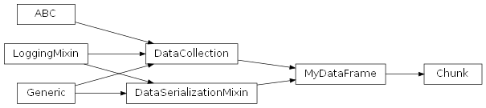
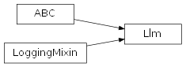
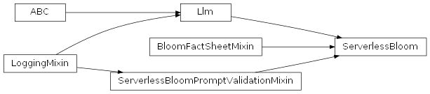

SentimentAnalysis.src.sentiment_analysis package
Subpackages
- SentimentAnalysis.src.sentiment_analysis.evaluation package
- Submodules
- SentimentAnalysis.src.sentiment_analysis.evaluation.all_languages_evaluation module
- all_languages_evaluation.py
AllLanguagesEvaluationAllLanguagesEvaluation.__init__()AllLanguagesEvaluation._compute_mean_metrics()AllLanguagesEvaluation.add_to_overall_metrics()AllLanguagesEvaluation.add_to_overall_sentiment_data()AllLanguagesEvaluation.get_mean_data_frame()AllLanguagesEvaluation.lang_pred_freq_dict()AllLanguagesEvaluation.show_freqs_comparison_by_prompt()AllLanguagesEvaluation.show_freqs_comparisons_by_prompt()AllLanguagesEvaluation.show_mean_metrics()AllLanguagesEvaluation.show_overall_rankings()
- SentimentAnalysis.src.sentiment_analysis.evaluation.classification_evaluation module
- classification_evaluation.py
ClassificationEvaluationClassificationEvaluation.LABELSClassificationEvaluation.__init__()ClassificationEvaluation._compute_average_metrics()ClassificationEvaluation._compute_metrics_per_label()ClassificationEvaluation._get_metric()ClassificationEvaluation._treat_none_values()ClassificationEvaluation.accuracyClassificationEvaluation.compute_metrics()ClassificationEvaluation.correct_labelsClassificationEvaluation.nameClassificationEvaluation.predicted_labelsClassificationEvaluation.set_labels()
- SentimentAnalysis.src.sentiment_analysis.evaluation.cross_strategy_prompt_evaluation module
- cross_strategy_prompt_evaluation.py
CrossStrategyPromptEvaluationCrossStrategyPromptEvaluation._add_to_chunk_col_map()CrossStrategyPromptEvaluation._align_query_nrs()CrossStrategyPromptEvaluation._extract_best_prompts()CrossStrategyPromptEvaluation._handle_double_col_names_in_overall_chunk()CrossStrategyPromptEvaluation._map_overall_chunk_columns()CrossStrategyPromptEvaluation._save_overall_best_prompt_ingredients_sets()CrossStrategyPromptEvaluation._save_overall_best_prompts()CrossStrategyPromptEvaluation._save_overall_chunk()CrossStrategyPromptEvaluation.join_best_prompts()
- SentimentAnalysis.src.sentiment_analysis.evaluation.deep_prompt_evaluation module
- deep_prompt_evaluation.py
DeepPromptEvaluationDeepPromptEvaluation.__init__()DeepPromptEvaluation._add_basic_ingredient()DeepPromptEvaluation._analyze_high_correlations()DeepPromptEvaluation._analyze_rank_correlations()DeepPromptEvaluation._decompose_prompts()DeepPromptEvaluation._encode_prompt_ingredients()DeepPromptEvaluation._find_high_corr_rows()DeepPromptEvaluation._get_basic_ingredients_categories_for_prompt_part_category()DeepPromptEvaluation._replace_language_specific_index()DeepPromptEvaluation.add_macro_ranks()DeepPromptEvaluation.add_prompt_freqs()DeepPromptEvaluation.add_prompt_metrics()DeepPromptEvaluation.add_ranks()DeepPromptEvaluation.all_freqsDeepPromptEvaluation.all_freqs_dfDeepPromptEvaluation.all_freqs_my_dfDeepPromptEvaluation.all_freqs_my_df_with_totalsDeepPromptEvaluation.analyze_correlation()DeepPromptEvaluation.bestDeepPromptEvaluation.cols_to_analyzeDeepPromptEvaluation.compute_all_prompt_metrics()DeepPromptEvaluation.correct_labelsDeepPromptEvaluation.dataDeepPromptEvaluation.decomposed_promptsDeepPromptEvaluation.describe_answer_data()DeepPromptEvaluation.describe_data()DeepPromptEvaluation.encoded_prompt_ingredientsDeepPromptEvaluation.get_metrics_for_aggregation()DeepPromptEvaluation.get_partial_metrics()DeepPromptEvaluation.get_ranking()DeepPromptEvaluation.metricsDeepPromptEvaluation.metrics_are_equal()DeepPromptEvaluation.n_promptsDeepPromptEvaluation.rankingDeepPromptEvaluation.worst
- SentimentAnalysis.src.sentiment_analysis.evaluation.evaluation_workflow module
- SentimentAnalysis.src.sentiment_analysis.evaluation.language_results_processor module
- SentimentAnalysis.src.sentiment_analysis.evaluation.metrics module
- SentimentAnalysis.src.sentiment_analysis.evaluation.metrics_visualization_mixin module
- metrics_visualization_mixin.py
MetricsVisualizationMixinMetricsVisualizationMixin.diagramMetricsVisualizationMixin.get_best()MetricsVisualizationMixin.show_best()MetricsVisualizationMixin.show_correlation_heatmap()MetricsVisualizationMixin.show_partial_metric()MetricsVisualizationMixin.show_worst()MetricsVisualizationMixin.submetricsMetricsVisualizationMixin.thresholds
- SentimentAnalysis.src.sentiment_analysis.evaluation.optimization_workflow module
- SentimentAnalysis.src.sentiment_analysis.evaluation.prompt_evaluation module
- prompt_evaluation.py
PromptEvaluationPromptEvaluation.configPromptEvaluation.prompt_engineerPromptEvaluation.prompt_ingredients_setsPromptEvaluation.__init__()PromptEvaluation._calculate_prompt_metrics_for_language()PromptEvaluation._find_other_prompts()PromptEvaluation._get_group_ingredients_sets()PromptEvaluation._mark_invalid_prompts()PromptEvaluation._reset_language_dependent_properties()PromptEvaluation.all_languages_evaluationPromptEvaluation.evaluate_prompt_group()PromptEvaluation.evaluate_prompts()PromptEvaluation.evaluate_prompts_for_language()PromptEvaluation.languagePromptEvaluation.language_results_processorPromptEvaluation.languages
- SentimentAnalysis.src.sentiment_analysis.evaluation.single_prompt_evaluation module
- Module contents
- SentimentAnalysis.src.sentiment_analysis.prompt_engineering package
- Submodules
- SentimentAnalysis.src.sentiment_analysis.prompt_engineering.ingredients_sets_provider module
- ingredients_sets_provider.py
IngredientsSetsProviderIngredientsSetsProvider.__init__()IngredientsSetsProvider._set_all_ingredients_sets()IngredientsSetsProvider._set_valid_and_invalid_ingredients_sets()IngredientsSetsProvider.all_ingredients_setsIngredientsSetsProvider.get_prompts()IngredientsSetsProvider.invalid_ingredients_setsIngredientsSetsProvider.valid_ingredients_sets
- SentimentAnalysis.src.sentiment_analysis.prompt_engineering.previous_ingredients_sets_provider module
- SentimentAnalysis.src.sentiment_analysis.prompt_engineering.previous_prompts_provider module
- SentimentAnalysis.src.sentiment_analysis.prompt_engineering.prompt_engineer module
- prompt_engineer.py
PromptEngineerPromptEngineer.loggerPromptEngineer.strategyPromptEngineer.add_query_cols()PromptEngineer.decompose_prompt_part()PromptEngineer.default_strategy()PromptEngineer.get_all_ingredients()PromptEngineer.get_basic_and_composed_ingredients()PromptEngineer.get_basic_ingredients()PromptEngineer.get_discarded_prompts()PromptEngineer.get_prompt_ingredients_sets()PromptEngineer.get_prompts()PromptEngineer.__init__()PromptEngineer.add_query_cols()PromptEngineer.decompose_prompt_part()PromptEngineer.default_strategy()PromptEngineer.get_all_ingredients()PromptEngineer.get_basic_and_composed_ingredients()PromptEngineer.get_basic_ingredients()PromptEngineer.get_discarded_prompts()PromptEngineer.get_prompt_ingredients_sets()PromptEngineer.get_prompts()PromptEngineer.strategy
- SentimentAnalysis.src.sentiment_analysis.prompt_engineering.prompt_engineer_factory module
- SentimentAnalysis.src.sentiment_analysis.prompt_engineering.prompt_engineering_strategy module
- prompt_engineering_strategy.py
PromptEngineeringStrategyPromptEngineeringStrategy.file_namePromptEngineeringStrategy.file_typePromptEngineeringStrategy.__init__()PromptEngineeringStrategy._generate_prompts()PromptEngineeringStrategy._load_discarded_prompts()PromptEngineeringStrategy._load_prompts()PromptEngineeringStrategy._save_prompts()PromptEngineeringStrategy._set_discarded_prompts()PromptEngineeringStrategy._set_file_properties()PromptEngineeringStrategy._set_prompt_engineering_config()PromptEngineeringStrategy._set_prompt_ingredients_sets()PromptEngineeringStrategy._set_prompts()PromptEngineeringStrategy.add_query_cols()PromptEngineeringStrategy.basic_and_composed_ingredientsPromptEngineeringStrategy.basic_ingredientsPromptEngineeringStrategy.dataPromptEngineeringStrategy.decompose_prompt_part()PromptEngineeringStrategy.discarded_promptsPromptEngineeringStrategy.prompt_generating_strategy_nrPromptEngineeringStrategy.prompt_ingredientsPromptEngineeringStrategy.prompt_ingredients_historyPromptEngineeringStrategy.prompt_ingredients_setsPromptEngineeringStrategy.prompts
- SentimentAnalysis.src.sentiment_analysis.prompt_engineering.prompt_engineering_strategy_1 module
- prompt_engineering_strategy_1.py
PromptEngineeringStrategy1PromptEngineeringStrategy1.N_PROMPTSPromptEngineeringStrategy1.N_PROMPTSPromptEngineeringStrategy1.__init__()PromptEngineeringStrategy1._generate_prompts()PromptEngineeringStrategy1.add_query_cols()PromptEngineeringStrategy1.basic_and_composed_ingredientsPromptEngineeringStrategy1.basic_ingredientsPromptEngineeringStrategy1.prompt_generating_strategy_nrPromptEngineeringStrategy1.prompt_ingredients
- SentimentAnalysis.src.sentiment_analysis.prompt_engineering.prompt_engineering_strategy_2 module
- prompt_engineering_strategy_2.py
PromptEngineeringStrategy2PromptEngineeringStrategy2.N_PROMPTSPromptEngineeringStrategy2.N_PROMPTSPromptEngineeringStrategy2.__init__()PromptEngineeringStrategy2.add_query_cols()PromptEngineeringStrategy2.basic_and_composed_ingredientsPromptEngineeringStrategy2.basic_ingredientsPromptEngineeringStrategy2.prompt_generating_strategy_nrPromptEngineeringStrategy2.prompt_ingredients
- SentimentAnalysis.src.sentiment_analysis.prompt_engineering.prompt_engineering_strategy_3 module
- prompt_engineering_strategy_3.py
PromptEngineeringStrategy3PromptEngineeringStrategy3.N_PROMPTSPromptEngineeringStrategy3.N_PROMPTSPromptEngineeringStrategy3.__init__()PromptEngineeringStrategy3._apply_changes()PromptEngineeringStrategy3.add_query_cols()PromptEngineeringStrategy3.basic_and_composed_ingredientsPromptEngineeringStrategy3.basic_ingredientsPromptEngineeringStrategy3.excludePromptEngineeringStrategy3.includePromptEngineeringStrategy3.prompt_generating_strategy_nrPromptEngineeringStrategy3.prompt_ingredientsPromptEngineeringStrategy3.scales
- SentimentAnalysis.src.sentiment_analysis.prompt_engineering.prompt_engineering_strategy_4 module
- prompt_engineering_strategy_4.py
PromptEngineeringStrategy4PromptEngineeringStrategy4.N_PROMPTSPromptEngineeringStrategy4.N_PROMPTSPromptEngineeringStrategy4.__init__()PromptEngineeringStrategy4._apply_changes()PromptEngineeringStrategy4.add_query_cols()PromptEngineeringStrategy4.basic_and_composed_ingredientsPromptEngineeringStrategy4.basic_ingredientsPromptEngineeringStrategy4.excludePromptEngineeringStrategy4.includePromptEngineeringStrategy4.prompt_generating_strategy_nrPromptEngineeringStrategy4.prompt_ingredientsPromptEngineeringStrategy4.scales
- SentimentAnalysis.src.sentiment_analysis.prompt_engineering.prompt_engineering_strategy_5 module
- prompt_engineering_strategy_5.py
PromptEngineeringStrategy5PromptEngineeringStrategy5.N_PROMPTSPromptEngineeringStrategy5.N_PROMPTSPromptEngineeringStrategy5.__init__()PromptEngineeringStrategy5._apply_changes()PromptEngineeringStrategy5.add_query_cols()PromptEngineeringStrategy5.basic_and_composed_ingredientsPromptEngineeringStrategy5.basic_ingredientsPromptEngineeringStrategy5.excludePromptEngineeringStrategy5.includePromptEngineeringStrategy5.prompt_generating_strategy_nrPromptEngineeringStrategy5.prompt_ingredientsPromptEngineeringStrategy5.scales
- SentimentAnalysis.src.sentiment_analysis.prompt_engineering.prompt_generating_strategy module
- prompt_generating_strategy.py
PromptGeneratingStrategyPromptGeneratingStrategy.answer_before_mentionPromptGeneratingStrategy.answer_startPromptGeneratingStrategy.before_mentionPromptGeneratingStrategy.before_sentencePromptGeneratingStrategy.prompt_part_categoriesPromptGeneratingStrategy.prompt_partsPromptGeneratingStrategy.questionPromptGeneratingStrategy.scalePromptGeneratingStrategy.selected_ingredientsPromptGeneratingStrategy.generate_prompt()PromptGeneratingStrategy.CMDPromptGeneratingStrategy.INGPromptGeneratingStrategy.STRPromptGeneratingStrategy.__init__()PromptGeneratingStrategy.define_prompt_part_generation_patterns()PromptGeneratingStrategy.generate_prompt()PromptGeneratingStrategy.get_prompt_part_generation_pattern()PromptGeneratingStrategy.selected_ingredients
- SentimentAnalysis.src.sentiment_analysis.prompt_engineering.prompt_generating_strategy_1 module
- prompt_generating_strategy_1.py
PromptGeneratingStrategy1PromptGeneratingStrategy1.answer_before_mentionPromptGeneratingStrategy1.answer_startPromptGeneratingStrategy1.before_mentionPromptGeneratingStrategy1.before_sentencePromptGeneratingStrategy1.prompt_part_categoriesPromptGeneratingStrategy1.prompt_partsPromptGeneratingStrategy1.questionPromptGeneratingStrategy1.scalePromptGeneratingStrategy1.selected_ingredientsPromptGeneratingStrategy1.generate_prompt()PromptGeneratingStrategy1.__init__()PromptGeneratingStrategy1.answer_before_mentionPromptGeneratingStrategy1.answer_startPromptGeneratingStrategy1.before_mentionPromptGeneratingStrategy1.before_sentencePromptGeneratingStrategy1.define_prompt_part_generation_patterns()PromptGeneratingStrategy1.generate_prompt()PromptGeneratingStrategy1.prompt_part_categoriesPromptGeneratingStrategy1.questionPromptGeneratingStrategy1.scalePromptGeneratingStrategy1.selected_ingredientsPromptGeneratingStrategy1.thought
- SentimentAnalysis.src.sentiment_analysis.prompt_engineering.prompt_generating_strategy_2 module
- prompt_generating_strategy_2.py
PromptGeneratingStrategy2PromptGeneratingStrategy2.answer_before_mentionPromptGeneratingStrategy2.answer_startPromptGeneratingStrategy2.before_mentionPromptGeneratingStrategy2.before_sentencePromptGeneratingStrategy2.prompt_part_categoriesPromptGeneratingStrategy2.prompt_partsPromptGeneratingStrategy2.questionPromptGeneratingStrategy2.scalePromptGeneratingStrategy2.selected_ingredientsPromptGeneratingStrategy2.generate_prompt()PromptGeneratingStrategy2.__init__()PromptGeneratingStrategy2.answer_before_mentionPromptGeneratingStrategy2.answer_startPromptGeneratingStrategy2.before_mentionPromptGeneratingStrategy2.before_sentencePromptGeneratingStrategy2.generate_prompt()PromptGeneratingStrategy2.instructionPromptGeneratingStrategy2.prompt_part_categoriesPromptGeneratingStrategy2.questionPromptGeneratingStrategy2.scalePromptGeneratingStrategy2.selected_ingredientsPromptGeneratingStrategy2.thought
- SentimentAnalysis.src.sentiment_analysis.prompt_engineering.prompt_generator module
- prompt_generator.py
PromptGeneratorPromptGenerator.answer_before_mentionPromptGenerator.answer_startPromptGenerator.before_mentionPromptGenerator.before_sentencePromptGenerator.prompt_part_categoriesPromptGenerator.prompt_partsPromptGenerator.questionPromptGenerator.scalePromptGenerator.selected_ingredientsPromptGenerator.generate_prompt()PromptGenerator.__init__()PromptGenerator.default_strategy()PromptGenerator.generate_prompt()PromptGenerator.get_prompt_part_generation_pattern()PromptGenerator.strategy
- SentimentAnalysis.src.sentiment_analysis.prompt_engineering.prompt_generator_factory module
- SentimentAnalysis.src.sentiment_analysis.prompt_engineering.prompt_ingredients_mixin module
- prompt_ingredients_mixin.py
PromptIngredientsMixinPromptIngredientsMixin._initialize_all_ingredients()PromptIngredientsMixin._set_basic_and_composed_ingredients()PromptIngredientsMixin.answers_before_mention()PromptIngredientsMixin.questions()PromptIngredientsMixin.sentiment_enumerationsPromptIngredientsMixin.sentiment_ordersPromptIngredientsMixin.sentiment_orders_as_strings
- SentimentAnalysis.src.sentiment_analysis.prompt_engineering.prompt_optimizer module
- prompt_optimizer.py
PromptOptimizerPromptOptimizer.VALIDATED_PROMPTS_FILE_NAMEPromptOptimizer.FREQ_THRESHOLDPromptOptimizer.VALIDPromptOptimizer.INVALIDPromptOptimizer.chunk_sizePromptOptimizer.FREQ_THRESHOLDPromptOptimizer.INVALIDPromptOptimizer.VALIDPromptOptimizer.VALIDATED_PROMPTS_FILE_NAMEPromptOptimizer.__init__()PromptOptimizer._compute_frequency_in_invalid_prompts()PromptOptimizer._get_all_unique_ingredients()PromptOptimizer._get_ingredients_sets_by_validity()PromptOptimizer._get_unique_ingredients()PromptOptimizer._is_prompts_collection()PromptOptimizer._is_sufficiently_frequent()PromptOptimizer._is_used_in_previous_valid_prompts()PromptOptimizer._is_used_in_valid_prompts()PromptOptimizer._perform_finegrained_analysis()PromptOptimizer._sort_variants_with_freqs()PromptOptimizer.analyze_valid_invalid_correlation_by_category()PromptOptimizer.analyze_valid_invalid_correlation_per_category()PromptOptimizer.chunk_sizePromptOptimizer.correlation_analysis()PromptOptimizer.discarded_prompts_analysis()PromptOptimizer.find_influential_prompt_ingredients_sets()PromptOptimizer.find_influential_prompt_parts()PromptOptimizer.find_influential_variants()PromptOptimizer.find_influential_variants_by_col_name()PromptOptimizer.finegrained_analysis()PromptOptimizer.print_overall_prompts_results()
- SentimentAnalysis.src.sentiment_analysis.prompt_engineering.prompt_optimizer_factory module
- SentimentAnalysis.src.sentiment_analysis.prompt_engineering.prompt_printer module
- prompt_printer.py
PromptPrinterPromptPrinter.print_category_analysis()PromptPrinter.print_category_statistics()PromptPrinter.print_finegrained_analysis()PromptPrinter.print_invalid_ingredients_in_discarded_prompts()PromptPrinter.print_invalid_prompt_parts()PromptPrinter.print_prompt_statistics()PromptPrinter.print_unique_category_values()PromptPrinter.print_unique_category_values_with_freqs()PromptPrinter.print_variants()PromptPrinter.print_variants_dicts()
- SentimentAnalysis.src.sentiment_analysis.prompt_engineering.prompts module
- SentimentAnalysis.src.sentiment_analysis.prompt_engineering.prompts_and_ingredients_manager module
- prompts_and_ingredients_manager.py
PromptsAndIngredientsManagerPromptsAndIngredientsManager.ALL_INGREDIENTS_SETS_NAMEPromptsAndIngredientsManager.ALL_PROMPTS_NAMEPromptsAndIngredientsManager.INVALID_INGREDIENTS_SETS_NAMEPromptsAndIngredientsManager.INVALID_PROMPTS_NAMEPromptsAndIngredientsManager.VALID_INGREDIENTS_SETS_NAMEPromptsAndIngredientsManager.VALID_PROMPTS_NAMEPromptsAndIngredientsManager.__init__()PromptsAndIngredientsManager.all_ingredients_setsPromptsAndIngredientsManager.all_promptsPromptsAndIngredientsManager.discarded_promptsPromptsAndIngredientsManager.invalid_ingredients_setsPromptsAndIngredientsManager.invalid_promptsPromptsAndIngredientsManager.previous_valid_ingredients_setsPromptsAndIngredientsManager.previous_valid_promptsPromptsAndIngredientsManager.valid_ingredients_setsPromptsAndIngredientsManager.valid_prompts
- SentimentAnalysis.src.sentiment_analysis.prompt_engineering.prompts_and_ingredients_manager_factory module
- SentimentAnalysis.src.sentiment_analysis.prompt_engineering.prompts_and_ingredients_provider module
- SentimentAnalysis.src.sentiment_analysis.prompt_engineering.prompts_generator module
- prompts_generator.py
PromptsGeneratorPromptsGenerator.configPromptsGenerator.llmPromptsGenerator.prompt_counterPromptsGenerator.prompt_ingredientsPromptsGenerator.prompt_ingredients_historyPromptsGenerator.target_n_promptsPromptsGenerator.generate_prompts()PromptsGenerator.__init__()PromptsGenerator._are_not_in_history()PromptsGenerator._generate_prompt()PromptsGenerator._generate_validated_prompt()PromptsGenerator._get_other_random_ingredients_elements()PromptsGenerator._get_random_ingredients_list()PromptsGenerator._log_prompt_exists()PromptsGenerator._validate_prompt()PromptsGenerator.generate_prompts()PromptsGenerator.previous_historyPromptsGenerator.prompt_counterPromptsGenerator.prompt_generation_strategy_nrPromptsGenerator.target_n_prompts
- SentimentAnalysis.src.sentiment_analysis.prompt_engineering.prompts_provider module
- prompts_provider.py
PromptsProviderPromptsProvider.__init__()PromptsProvider._set_all_prompts()PromptsProvider._set_discarded_prompts()PromptsProvider._set_valid_and_invalid_prompts()PromptsProvider.all_promptsPromptsProvider.discarded_promptsPromptsProvider.get_prompts()PromptsProvider.invalid_promptsPromptsProvider.valid_prompts
- Module contents
- SentimentAnalysis.src.sentiment_analysis.retrieval package
- Submodules
- SentimentAnalysis.src.sentiment_analysis.retrieval.batch_processor module
- SentimentAnalysis.src.sentiment_analysis.retrieval.chunk_processor module
- SentimentAnalysis.src.sentiment_analysis.retrieval.custom_exceptions module
- SentimentAnalysis.src.sentiment_analysis.retrieval.language_processor module
- SentimentAnalysis.src.sentiment_analysis.retrieval.query_column_processor module
- SentimentAnalysis.src.sentiment_analysis.retrieval.query_processor module
- Module contents
- SentimentAnalysis.src.sentiment_analysis.samples package
- Submodules
- SentimentAnalysis.src.sentiment_analysis.samples.balanced_samples_provider module
- SentimentAnalysis.src.sentiment_analysis.samples.samples_manager module
- SentimentAnalysis.src.sentiment_analysis.samples.samples_provider module
- SentimentAnalysis.src.sentiment_analysis.samples.unbalanced_samples_provider module
- Module contents
Submodules
SentimentAnalysis.src.sentiment_analysis.bloom_fact_sheet_mixin module
bloom_fact_sheet_mixin.py
Version 1.0, updated on 2024-12-24
- class SentimentAnalysis.src.sentiment_analysis.bloom_fact_sheet_mixin.BloomFactSheetMixin[source]
Bases:
objectBloomFactSheetMixin class.
This class provides a description of the BLOOM LLM, and constants regarding its online resources and local storage location. They are used in the ServerlessBloom class.
- API = 'https://api-inference.huggingface.co/models/bigscience/bloom'
- AUTHOR = 'BigScience Workshop: T. Le Scao et al.'
- AVAILABLE_LANGUAGES: List[str] = [Language.EN, Language.ES, Language.FR, Language.PT]
- DESCRIPTION = "--------------------------------------------------------\n \nHugging Face data from https://huggingface.co/bigscience/bloom \n========================================================\n \n176B-parameter open-access language model trained on a dataset comprising hundreds of sources in 46 natural and 13 programming languages by: \nBigScience Workshop: T. Le Scao et al., 'BLOOM: A 176B-Parameter Open-Access Multilingual Language Model', Nov. 2022. \n[Online]. Available: https://arxiv.org/abs/2211.05100v4.pdf.\n--------------------------------------------------------\n \n*** Attention: The usage of BLOOM is subject to the BigScience RAIL License v.1.0 (https://huggingface.co/spaces/bigscience/license)***\n--------------------------------------------------------\n \n"
- PLATFORM = 'Hugging Face'
- PUBLICATION_URL = 'https://arxiv.org/abs/2211.05100v4.pdf'
- SOURCE = 'bigscience/bloom'
- TITLE = 'BLOOM: A 176B-Parameter Open-Access Multilingual Language Model'
- URL = 'https://huggingface.co/bigscience/bloom'
- YEAR = 'Nov. 2022'
SentimentAnalysis.src.sentiment_analysis.chunk module
chunk.py
Version 1.0, updated on 2025-05-01
- class SentimentAnalysis.src.sentiment_analysis.chunk.Chunk(data: DataFrame | None = None, name: str = '', source: str = '')[source]
Bases:
MyDataFrameA specialized class for managing chunks of data.
Inherits from MyDataFrame and adds methods specific to chunk operations.
A Chunk is a MyDataFrame whose DataFrame contains a special data structure: It has non-query columns like ‘sentence_normalized’, ‘mention’ and ‘polarity’, ‘query’ columns and ‘answer’ columns, all identified by a query number appended to the column name.
- config
The configuration settings for sentiment analysis operations.
- Type:
SentimentAnalysisConfig
- non_query_cols
The list of non-query columns in the data, retrieved from the LLM specified in the config settings.
- Type:
List[str]
- answer_cols
The list of answer columns in the data.
- Type:
List[str]
- query_cols
The query columns in the data.
- Type:
List[str]
- version
The version retrieved from the _config variable.
- Type:
str
- rename_cols(cols_map: 'Dict[str, str]') None:[source]
Renames the columns of the DataFrame based on the provided column map.
- reorder_cols() None:[source]
Orders the columns of the current chunk in a standardized way.
- set_directory() None:[source]
Sets the directory for storing chunks.
Inherited Attributes and Methods
See the MyDataFrame class.
- __init__(data: DataFrame | None = None, name: str = '', source: str = '') None[source]
Constructor.
Initializes a new instance of the Chunk class with a DataFrame collection of data, an identifying name and an optional source from which the data can be fetched if is available from an online source.
- Parameters:
data (DataFrame | None) – The data to populate the DataFrame. Defaults to None.
name (str) – The name of the DataFrame. Defaults to an empty string.
source (str | None) – The source (Url) where the data is to be fetched from.
- _set_answer_and_query_cols() None[source]
Sets the query and answer columns based on the column names.
This method determines which columns correspond to query and answer data by removing non-query columns from the available column names and identifying columns that contain either the substring ‘query’ or ‘answer’. It sorts these columns based on integer values that appear behind the last underscore in their names and assigns them to respective attributes for later use.
Notes
- This method modifies the ‘query_cols’ and ‘answer_cols’ properties in
place and does not return any values.
- property answer_cols: List[str]
Retrieves the list of answer columns associated with this object.
This method returns the answer columns stored in the ‘_answer_cols’ attribute. If ‘_answer_cols’ is None or empty, it initializes the answer and query columns by invoking the ‘_set_answer_and_query_cols’ method before returning the updated ‘_answer_cols’ list.
- Returns:
A list of strings representing the answer column names.
- Return type:
List[str]
- config
The non_query_cols is the list of column names that do not represent query or answer columns. This depends on the columns a data source suite produces and therefore, it needs to be fetched from the llm the suite is attached to at the moment the Chunk instance is initialized.
- property query_cols: List[str]
Returns the query columns for the instance.
The ‘query_cols’ property retrieves the list of query column names associated with the instance. If the internal ‘_query_cols’ variable is not set or empty, it invokes the ‘_set_answer_and_query_cols’ method to populate the necessary query columns.
- Returns:
A list of query column names for the instance.
- Return type:
List[str]
- rename_cols(cols_map: Dict[str, str]) None[source]
Renames the columns of the DataFrame based on the provided column map.
This method updates the current DataFrame’s column names according to the mapping provided in the cols_map parameter. The renaming is done in place and modifies the original DataFrame.
- Parameters:
cols_map (Dict[str, str]) – A dictionary mapping the original column names (keys) to their new names (values). Keys represent the existing column names, and values define the corresponding new names to be assigned.
- reorder_cols() None[source]
Orders the columns of the current chunk in a standardized way.
Puts the non-query columns first, then displays the query columns in alphabetically ascending orden, then the answer columns in the same order.
- set_directory() None[source]
Sets the directory for storing chunks.
This method ensures that the appropriate directory path is set for storing chunks, based on the file’s extension and the provided version. If the directory path does not already match the specified version, a new directory is created using the DirectoryFactory. The path of the directory is then updated, and an informational log message is generated for the operation.
- Raises:
FileNotFoundError – If the directory cannot be created by the DirectoryFactory.
Notes
This method does not return any value.
- property version: str
Gets the version from the _config variable.
Retrieves the version from the _config variable each time this getter is called. This ensures that the getter always returns the latest version.
- Returns:
The version.
- Return type:
str
SentimentAnalysis.src.sentiment_analysis.chunk_loader module
chunk_loader.py
Version 1.0, updated on 2025-05-01
- class SentimentAnalysis.src.sentiment_analysis.chunk_loader.ChunkLoader(language: str = '', base_dir: str = '', chunk_dir: str = 'chunks')[source]
Bases:
LoggingMixinChunkLoader class.
This class provides methods for loading serialized chunks from disk.
- Parameters:
language
method. (base_dir and chunk_dir. See details in the __init__)
- chunks
Dictionary of all chunks for the current language where the keys are the integer numbers of the chunks and the values are the chunks.
- Type:
Dict[int, Chunk]
- version
The query/prompt variants version set in the SentimentAnalysisConfig settings. This attribute only has a getter. If you need to change the version, change the version in the SentimentAnalysisConfig settings.
- Type:
str
- valid_queries_chunk
A Chunk object with all valid queries combined from all chunks for the current language.
- Type:
Chunk
- extract_best_queries(self, best_query_nrs: List[str]) Chunk:[source]
Extracts the columns of the best queries into a new chunk.
- __init__(language: str = '', base_dir: str = '', chunk_dir: str = 'chunks')[source]
Initializes the ChunkLoader with the specified parameters.
- Parameters:
language (str) – Language code (default is ‘en’).
base_dir (str) – Base directory path (default is ‘’).
chunk_dir (str) – Chunk directory path (default is ‘chunks’).
- _drop_query_and_answer_column(chunk: Chunk, query_nr: str) Chunk[source]
Drops the specified query and answer columns from the chunk.
Removes the query and answer columns with the specified query number from the given chunk.
- Parameters:
chunk (Chunk) – A chunk with query and answer columns.
query_nr (str) – Number in string format by which the query and answer columns to drop can be identified.
- Returns:
The given chunk without the removed query and answer columns.
- Return type:
Chunk
- _extract_first_best_queries(chunk_nr: int, best_query_nrs: List[str]) Chunk[source]
Extracts the first best_queries.
Determines the chunk that contains the first of the list of best queries, copies the corresponding chunk and removes all query and answer columns that do not match the list of best queries. This method can lead to multiple elements from the list of best queries being processed.
- Parameters:
chunk_nr (int) – Number of the chunk in which to look for queries matching the best queries.
- Returns:
A Chunk containing the query and answer columns of the specified chunk that match one or more of the best query numbers.
- Return type:
Chunk
- _extract_single_query(query_nr: int, chunk_nr: int, output_chunk: Chunk) Chunk[source]
Extracts a query from a chunk to the given chunk.
Extracts the query and answer column identified by the specified number from the chunk identified by the specified chunk number and adds the columns to the given output chunk.
- Parameters:
query_nr (int) – The number of the query and the answer column to extract from the chunk.
chunk_nr (int) – The number of the chunk from which to extract the query and answer columns.
output_chunk (Chunk) – The chunk in which to assemble the extracted columns.
- Returns:
The output chunk with the extracted columns added.
- Return type:
Chunk
- _get_answer_cols_names(chunk: Chunk) List[str][source]
Gets the names of the answer columns in a given chunk.
- Parameters:
chunk (Chunk) – The chunk whose answer columns are to be found.
- Returns:
The List of the names of the answer columns in the given chunk.
- Return type:
List[str]
- _get_chunk_nr(file_name: str) int[source]
Extracts the chunk number from the file name of a chunk.
- Parameters:
file_name (str) – The name of the chunk file.
- Returns:
The number of the chunk.
- Return type:
int
- _get_query_cols_names(chunk: Chunk) List[str][source]
Gets the names of the query columns in a given chunk.
- Parameters:
chunk (Chunk) – The chunk whose query columns are to be found.
- Returns:
The List of the names of the query columns in the given chunk.
- Return type:
List[str]
- _load_chunks()[source]
Loads chunks with the prompt variants results for the current language.
Loads chunks with the prompt variants results for the current language from the local disk.
Sets the chunks property of this class.
- _set_directory(dir_name: str) Directory[source]
Sets the directory with the specified directory name.
- Parameters:
dir_name (str) – Name of the directory to set.
- Returns:
An instance of the Directory class with the specified directory name.
- Return type:
- _validate_chunk_nr(chunk_nr: int, query_nr: str) None[source]
Checks if the specified chunk exists and contains the specified query.
- Parameters:
chunk_nr (int) – The integer chunk number.
query_nr (str) – The query identifier as a string.
- Raises:
CriticalException – If the chunk does not exist or the query is not found in the chunk.
- extract_best_queries(best_query_nrs: List[str]) Chunk[source]
Extracts the columns of the best queries into a new chunk.
Extracts the columns of the best queries from all chunks that exist for the current language into a new chunk only containing the best queries.
- Parameters:
best_query_nrs (List[str]) – The string identifiers of the best queries.
- Returns:
A Chunk containing the query and answer columns of the best queries.
- Return type:
Chunk
- property valid_queries_chunk: Chunk
Returns the valid columns of the chunks in a single Chunk.
Assembles the valid columns from all chunks for the current language in a single Chunk.
- Returns:
The Chunk with the valid queries and answers from all the chunks for the current language.
- Return type:
Chunk
Notes
‘Invalid’ query columns, i.e. columns having no corresponding answer column, are discarded in this process.
- property version: str
Gets the version from the _config variable.
Retrieves the version from the _config variable each time this getter is called. This ensures that the getter always returns the latest version.
- Returns:
The version.
- Return type:
str
SentimentAnalysis.src.sentiment_analysis.file_loader module
file_loader.py
Version 1.0, updated on 2024-12-04
- class SentimentAnalysis.src.sentiment_analysis.file_loader.FileLoader(language: str = 'en', sub_dir: str = '')[source]
Bases:
LoggingMixinFileLoader class.

- __init__(language: str = 'en', sub_dir: str = '')[source]
Initializes the ChunkLoader with the specified parameters.
- Parameters:
language (str) – Language code (default is ‘en’).
sub_dir (str) – Name of the subdirectory in which are stored the files to be loaded. Defaults to an empty string.
- _get_file_names_by_language(language: str) List[str][source]
Get all file names in directory that correspond to the given language.
- Parameters:
language (str) – Language code, e.g. ‘en’
- Returns:
List of file names.
- Return type:
List[str]
SentimentAnalysis.src.sentiment_analysis.llm module
llm.py
Version 1.0, updated on 2025-05-01
- class SentimentAnalysis.src.sentiment_analysis.llm.Llm[source]
Bases:
ABC,LoggingMixinLlm class.
Abstract base class for LLM implementations.
This class provides shared functionality for LLM’s and enforces implementation of critical methods (‘_set_suite’ and ‘_add_api_to_config’) in subclasses such as ‘ServerlessBloom’.
It provides logging functionality through the LoggingMixin.
The Llm class and its child classes basically provide two functionalities: prompt engineering and sentiment retrieval from the LLM’s API.
- logger
Logger instance used for logging messages.
- Type:
logging.Logger
- compatible_languages
The languages that both the data suite and the llm understand.
- Type:
List[str]
- config
Configuration object that holds sentiment analysis settings.
- Type:
SentimentAnalysisConfig
- languages
The list of languages the LLM understands.
- Type:
List[str]
- non_query_cols
The list of non-query columns in the dataset.
- Type:
List[str]
- samples_manager
A SamplesManager instance that is needed to retrieve any samples from the suite.
- Type:
SamplesManager
- suite
The suite from which to get the data samples.
- Type:
DataSourceSuite
- predict_sentiments() None:[source]
Retrieves the sentiment predictions for all languages.
- predict_sentiments_in_language(language: str = 'en') None:[source]
Retrieves the sentiment predictions for the specified language.
- __init__()[source]
Constructor.
Initializes the Llm class, setting up essential components for sentiment analysis and prompt engineering. It initializes internal properties, configures logging and prepares sentiment analysis settings specific to the implementation of the LLM.
Notes
The method calls ‘_add_api_to_config’ and ‘_add_llm_instance_to_config’ to ensure the LLM-specific API details are added to the configuration and the current class instance is registered.
- abstract _add_api_to_config() None[source]
Adds LLM-specific API settings to the configuration.
- _add_llm_instance_to_config() None[source]
Adds this LLM instance to the configuration.
- _set_compatible_languages() None[source]
Sets the compatible_languages property.
Sets the compatible_languages property, provided that the ‘languages’ property is set and the ‘suite.languages’ attribute chain is correct.
Notes
The decorators ensure the needed properties and attributes exist for computing the compatible_languages property. If the ‘languages’ property is not set or the ‘suite.languages’ attribute chain is invalid, a ValueError is raised.
- property compatible_languages: List[str]
Returns the languages that both the data suite and the llm understand.
- Returns:
The list of languages the data suite and the llm understand.
- Return type:
List[str]
Notes
This is a computed property that has no setter method. If the property is not set when called, it calls the decorated _set_compatible_languages method to ensure the necessary properties and attributes are set for computing and setting the compatible_languages property so that the latter is available next time it is needed without having to compute it anew.
- abstract property languages: List[str]
Returns the list of languages the LLM understands.
Abstract property that needs to be implemented by subclasses.
- property name: str
Returns the LLM instance’s name.
Notes
Computed property without setter.
- property non_query_cols: List[str]
Retrieves the list of non-query columns in the dataset.
Retrieves the list of non-query columns the data suite offers.
- Returns:
List of column names of non-query column names.
- Return type:
List[str]
Notes
The non_query columns are the calumns that do not represent query or answer columns. They typically contain - the text samples for which to retrieve the sentiment class - the targets (= mentions) mentioned in the samples for which to
retrieve the sentiments
the sentiment annotations (= polarities) for the text samples
This is a computed property without setter.
- predict_sentiments() None[source]
Retrieves the sentiment predictions for all languages.
This method retrieves the sentiment predictions for all languages in the data suite.
Iterating through the languages, it calls the predict_sentiments_in language method to retrieve the predictions.
Notes
ATTENTION: Before starting a new execution of this method, with another data_offset than before, ensure you have saved the checkpoints and the result files from the txt and csv data folders to another location! Otherwise, the existing checkpoints will prevent the successful execution of the sentiment prediction.
ATTENTION: Before attempting to run this method, ensure that prompt engineering was executed first.
If this method fails due to not existing validated queries, the BatchProcessor will have created a first checkpoint (e.g. “MadTscSuite_en_balanced_33_batch_checkpoint.txt”) containing a “1” value in the data/txt folder. This does not have to be removed before restarting sentiment retrieval as the programm will restart from the beginning if the first checkpoint is set to 1. Just run prompt engineering and try to run this method again afterwards.
- predict_sentiments_in_language(language: str = 'en') None[source]
Retrieves the sentiment predictions for the specified language.
This method retrieves the sentiment predictions for the specified language in the data suite.
- Parameters:
language (str) – Language code, e.g. ‘en’. Defaults to English (‘en’).
Notes
ATTENTION: Before attempting to run this method, ensure that prompt engineering was executed first.
If this method fails due to not existing validated queries, the BatchProcessor will have created a first checkpoint (e.g. “MadTscSuite_en_balanced_33_batch_checkpoint.txt”) containing a “1” value in the data/txt folder. This does not have to be removed before restarting sentiment retrieval as the programm will restart from the beginning if the first checkpoint is set to 1. Just run prompt engineering and try to run this method again afterwards.
The samples for which the predictions are retrieved are provided by the SamplesManager, depending on the settings in the sentiment analysis configuration.
The method does not return anything. The prediction results are saved in a DataFrame by the QueryColumnProcessor during the sentiment retrieval with the various processors and serialized as a CSV file.
- reset_samples_manager() None[source]
Resets the samples_manager property.
Resets the samples_manager property so that the SamplesManager needs to be re-initialized with the new attribute values.
This reset method is called if attributes are changed that affect the SamplesManager’s data or behavior.
- property samples_manager: SamplesManager
Returns a SamplesManager instance needed to retrieve any samples from the suite.
Ensures only one SamplesManager instance is created.
- Returns:
The SamplesManager instance.
- Return type:
SamplesManager
Notes
Computed property without setter.
- abstract property suite: T
Returns the suite from which to get the data samples.
- Returns:
The data suite providing the data samples.
- Return type:
DataSourceSuite
SentimentAnalysis.src.sentiment_analysis.query module
query.py
Version 1.0, updated on 2024-12-04
- class SentimentAnalysis.src.sentiment_analysis.query.Query(col_name: str = '', nr: int = 0)[source]
Bases:
LoggingMixinQuery class.
This class serves to store and convert the different query identifiers a query might need to be assigned in the sentiment analysis workflow.
- _set_nr() None[source]
Sets the query number.
Extracts the query number from the column name of the query and sets the nr property.
- property col_name: str
Gets the name of the column in which is stored the query.
Notes
Usually, the column name is a string in the format: “query_x”, where x is the integer query number.
- property nr: int
Gets the integer number of the query.
Notes
The query numbers start with 1. If the number is 0, the property is not set yet.
- property nr_with_version: str
Gets the a string identifier with the version and the query number.
Notes
The version and the query number are joined in a string with the format: “version_nr”.
Adding the version to the query number accounts for the fact that queries with the same query numbers from different prompt engineering versions need to be distinguished when assembled together.
SentimentAnalysis.src.sentiment_analysis.sentiment_analysis_config module
sentiment_analysis_config.py
Version 1.0, updated on 2025-05-01
- class SentimentAnalysis.src.sentiment_analysis.sentiment_analysis_config.SentimentAnalysisConfig(*args: Any, **kwargs: Any)[source]
Bases:
objectSentimentAnalysisConfig class.
This static class is used to store and manage user-defined and other settings for the sentiment analysis workflows. It follows a singleton pattern, which ensures that only one instance of this class exists at any time throughout the application while being accessible globally from all classes.
- _instance
The singleton instance of the class.
- Type:
SentimentAnalysisConfig
- _settings
A dictionary to store the configuration settings.
- Type:
Dict[str, Any]
- _initialized
A flag indicating whether the configuration has been initialized.
- Type:
bool
- get(cls, key: str) Any:[source]
Retrieves the value associated with a given key from the settings.
- set(cls, key: str, val: Any) None:[source]
Sets the value for a given key in the settings.
- remove(cls, key: str) None:[source]
Removes a key-value pair from the settings.
- update(cls, \*\*kwargs) None:[source]
Updates multiple settings at once based on provided keyword arguments.
- print(cls) None:[source]
Prints the current settings.
- to_str(cls) str:[source]
Returns a string representation of the current settings.
- static __new__(cls, *args: Any, **kwargs: Any) SentimentAnalysisConfig[source]
Creates and initializes a singleton instance of this class.
Creates a new instance of this class if one does not already exist and initializes it with any provided parameters.
- Returns:
The singleton instance of the class.
- Return type:
SentimentAnalysisConfig
Notes
For the arguments and keyword arguments that can be passed as parameters, see the parameters of the _initialize method.
- classmethod _initialize(api: str = '', llm: T | None = None, from_sample: int = 0, to_sample: int = 9999999, batch_size: int = 100, data_offset: int = 0, n_batches: int = 1, chunk_size: int = 15, version: str = '00', balance: int = 33, balanced: bool = False, n_best_prompts: int = 5, target_n_prompts: int = 150, with_validation: bool = True) None[source]
Initializes the configuration settings with the provided values.
- Parameters:
api (-) – API for the queries to the LLM. Will be set when a concrete Llm instance like ServerlessBloom is initiated.
llm (-) – A concrete Llm instance like ServerlessBloom. Is set when a concrete Llm instance is created.
from_sample (-) – Sample number from which to start any operations. Defines the first part of the subdirectory’s name where the data are stored.
to_sample (-) – Sample number at which to stop any operations. Defines the second part of the subdirectory’s name where the data are stored.
batch_size (-) – Number of samples to process in a batch. Defaults to 100. If the “balanced” parameter is set to “True”, the batch size should accordingly be set to a multiple of 3 times the “balance” parameter value.
data_offset (-) – Sample number from which to start any operations. Data in the samples DataFrame will be removed before the rest of the data is processed. Has no implications regarding the (sub)directory where the data are stored.
n_batches (-) – Number of batches to process. Defaults to 1.
chunk_size (-) – Number of queries to include in one chunk. Defaults to 15.
version (-) – Version of prompt sets/validated queries to use to build chunks from.
balanced (-) – Whether to construct and use a balanced dataset where each sentiment category appears as often as the other sentiment categories.
balance (-) – Number of samples of the same sentiment category (positive/ negative/neutral) to use to build a balanced dataset. Defaults to 33. If the “balanced” parameter is set to “True” The batch size should accordingly be set to a multiple of the “balance” value.
n_best_prompts (-) – The number of prompts that are to be included in the lists of best and worst prompts. The analysis will show the n best prompts and the n worst prompts.
target_n_prompts (-) – The total number of prompt variants to generate or to load from the JSON files (prompt_sets_history, validated_queries). Defaults to 150, because each query applied on 100 samples takes about 1 minute. The rate limit being approximately 1500 prompts, thus 15 different queries for 100 samples, and the waiting time being set to 63 minutes, 15 queries need about 80 minutes. So, extracting 150 examples and processing them will take about 13.5 hours, which is feasible if it is only done for one language.
with_validation (-) – Whether the retrieval results should be checked for validity, rejecting ‘invalid’ results. Should be set to True for prompt engineering, and to “False” for production. Default: True.
- classmethod get(key: str) Any[source]
Retrieves the value associated with a given key from the settings.
- Parameters:
key (str) – The key to get from the settings.
- classmethod log(message: str, level: str = 'info', msg_id: str = '')
Logs a message at the specified logging level.
Public method to log messages at the specified level. This can be used both within class instances and statically from the class itself if no instance is available.
This method is intended for direct use for logging without needing detailed contextual information like class or method names in the logs.
- Parameters:
message (str) – The message to log.
level (str) – The logging level (‘debug’, ‘info’, ‘warning’, ‘error’, ‘exception’, ‘critical’). Defaults to ‘info’.
msg_id (str) – Message identifier that can be used to identify the logging message, e.g. for use in the ‘DISALLOWED_MESSAGES’ list in the settings file. Defaults to an empty string.
Examples
>>> LoggingMixin.log("An informational message", "info") >>> LoggingMixin.log("An error message", "error", "err_msg_01")
- classmethod print() None[source]
Prints the current settings.
- classmethod remove(key: str) None[source]
Removes a key-value pair from the settings.
- Parameters:
key (str) – The key to remove from the settings.
- classmethod reset_instance() None[source]
Resets the single instance of this class.
This method is needed to reinitialize the class for test purposes.
- classmethod set(key: str, val: Any) None[source]
Sets the value for a given key in the settings.
- Parameters:
key (str) – The key to set in the settings.
val (Any) – The value to associate with the key.
- classmethod to_str() str[source]
Returns a string representation of the settings.
- Returns:
The string representation of the settings.
- Return type:
str
- classmethod update(**kwargs) None[source]
Updates multiple settings at once based on provided keyword arguments.
- Parameters:
kwargs (Any) – Key-value pairs of settings to update.
Examples
>>> config = SentimentAnalysisConfig() >>> config.update(version='01', balanced=True)
- classmethod validate() None[source]
Validates config settings for logical consistency.
- Raises:
CriticalException – If the config settings are invalid.
Usage –
----- –
>>> SentimentAnalysisConfig.validate() –
SentimentAnalysis.src.sentiment_analysis.sentiment_analysis_workflow module
sentiment_analysis_workflow.py
Version 1.0, updated on 2024-12-17
SentimentAnalysis.src.sentiment_analysis.sentiment_stats module
sentiment_stats.py
Version 1.0, updated on 2025-05-01
- class SentimentAnalysis.src.sentiment_analysis.sentiment_stats.SentimentStats(df: DataFrame)[source]
Bases:
objectSentimentStats class.
- property df: DataFrame
- property n_batches: int
- SentimentAnalysis.src.sentiment_analysis.sentiment_stats.normalize_polarities(data: DataFrame) DataFrame[source]
Replaces the numerical values of the original MAD_TSC polarity values.
Replaces the numerical values of the original MAD_TSC polarity values in the ‘polarity’ column by the values used by the sentiment prediction.
- Parameters:
data (DataFrame) – The DataFrame object in which the DataFrame is mapped.
- Returns:
The DataFrame with the normalized ‘polarity’ column.
- Return type:
DataFrame
SentimentAnalysis.src.sentiment_analysis.serverless_bloom module
serverless_bloom.py
Version 1.0, updated on 2024-12-14
- class SentimentAnalysis.src.sentiment_analysis.serverless_bloom.ServerlessBloom[source]
Bases:
Llm,BloomFactSheetMixin,ServerlessBloomPromptValidationMixinServerlessBloom class.
This class implements the Llm class with properties and methods specific to the serverless use of BLOOM.
- languages
The list of languages the LLM supports.
- Type:
List[str]
- suite
The data source suite from which to get the data samples.
- Type:
DataSourceSuite
- __init__()[source]
Constructor.
Initializes the class.
- _add_api_to_config() None[source]
Adds the the LLM-specific API to the configuration settings.
Adds the LLM-specific API to the _config variable, which is passed to the different sentiment retrieval processors, so that it is accessible from the query processor that needs it for sending the queries.
- _set_suite() None[source]
Loads the data suite and makes it available via the suite property.
Initializes the suite and loads its subsets using the MadTscWorkflow.
Notes
This method must be changed if the user wants to use another suite with BLOOM.
- property languages: List[str]
Returns the list of languages the LLM supports.
If the languages have not been initialized, it retrieves them from the AVAILABLE_LANGUAGES attribute set in the BloomFactSheetMixin.
- Returns:
A list of language codes, corresponding to the supported languages.
- Return type:
List[str]
- property suite: T
Returns the data source suite from which to get the data samples.
- Returns:
The initialized data suite providing the data samples.
- Return type:
DataSourceSuite
SentimentAnalysis.src.sentiment_analysis.serverless_bloom_prompt_validation_mixin module
serverless_bloom_prompt_validation_mixin.py
Version 1.0, updated on 2025-01-25
- class SentimentAnalysis.src.sentiment_analysis.serverless_bloom_prompt_validation_mixin.ServerlessBloomPromptValidationMixin[source]
Bases:
LoggingMixinServerlessBloomPromptValidationMixin class.
A mixin class that provides validation methods for processing and validating prompts in a serverless Bloom-based application.
This mixin includes properties and methods that support the validation of sentiment analysis prompts. It handles setting prompts and validation flags, as well as processing data batches with the appropriate language configurations.
- prompts
The prompts used for generating query-specific prompts.
- Type:
PromptsDictType
- process_query(payload: Dict[str, str]) str | int:[source]
Processes a single query by sending it to the ‘QueryProcessor’.
- validate_prompt(language: str = 'en', prompts: PromptsDictType = None)[source]
-> None:
Validates a prompt.
- _add_query_col() None[source]
Composes the queries and inserts them in a column of the DataFrame.
Composes the prompts from their ingredients and inserts the corresponding prompts for each sample in a separate column corresponding to the respective query variant.
- _get_batch_df() DataFrame[source]
Selects a random batch of data. based on the batch size specified in the configuration.
Selects a random batch of data based on the batch size specified in the configuration.
For a batch size of 1, a single random row from ‘self.data’ is selected.
For a batch size of 3, random samples with three distinct polarities are selected from the dataset.
- Returns:
A DataFrame containing the selected batch of data, filtered based on the specified batch size and polarity criteria.
- Return type:
DataFrame
- _process_query_for_validation() bool[source]
Processes a query for validation purposes.
Processes a query in a single batch, sending the prompt of each row to the API, collecting and reporting failed answers and returning the result for further validation.
- Returns:
Whether the query was successfully processed and returned the correct answers.
- Return type:
bool
- _report_failed_answer() None[source]
Reports an answer that failed to be of the expected type.
Reports answers that failed to meet expected response types by logging the count and details of failed queries.
- _retrieve_sentiment_for_validation() bool[source]
Retrieves the sentiment predictions for the data.
This method simulates the retrieval of the sentiment predictions for the samples in the data DataFrame.
- Returns:
Whether the query was successfully processed and returned the correct answers.
- Return type:
bool
- property invalid_prompts: History
- process_query(payload: Dict[str, str], expected_answer: str) str | int[source]
Processes a single query by sending it to the ‘QueryProcessor’.
- Parameters:
payload (Dict[str, str]) – A dictionary containing the query inputs.
expected_answer (str) – The expected answer for the query.
- Returns:
The processed answer or error code.
- Return type:
str | int
- property prompts: Dict[str, Dict[str, str]]
Gets the prompts used for generating query-specific prompts.
- Returns:
A dictionary containing prompts for prompt generation.
- Return type:
PromptsDictType
- validate_prompt(language: str = 'en', prompt: Dict[str, str] = None) bool[source]
Validates a single prompt.
Validates a prompt by setting language and prompts, iterating through data batches, and processing sentiment analysis.
- Parameters:
language (str) – The language for prompt validation (default is ‘en’).
prompt (Dict[str, str]) – Prompt consisting of different parts whose names constitute the keys in the dictionary and whose values are the values of the dictionary’s entries.
- Returns:
True if the prompt was validated, False otherwise.
- Return type:
bool
SentimentAnalysis.src.sentiment_analysis.serverless_bloom_workflow module
serverless_bloom_workflow.py
Version 1.0, updated on 2025-01-10
- class SentimentAnalysis.src.sentiment_analysis.serverless_bloom_workflow.ServerlessBloomWorkflow[source]
Bases:
LoggingMixinServerlessBloomWorkflow class.
This class orchestrates operations related to sentiment analysis, prompt engineering, evaluation and optimization using serverless BLOOM.
- config
Configuration settings for the sentiment analysis workflow.
- Type:
SentimentAnalysisConfig
- llm
The language model instance used for sentiment analysis.
- Type:
ServerlessBloom
- execute() None:[source]
Defines and runs the operations the serverless Bloom workflow needs to execute.
- run_evaluation(strategy_nr: int, language: str | None = None) None:[source]
Evaluate the sentiment analysis for the specified language.
- run_prompt_engineering(strategy_nr: int) None:[source]
Runs prompt engineering for the specified prompt engineering strategy.
- run_prompt_optimization(strategy_nr: int, language: str = 'en') None:[source]
Runs prompt optimization for the specified strategy and language.
- run_sentiment_analysis(strategy_nr: int, language: str | None = None)[source]
-> None:
Runs sentiment analysis for a specified language or for all languages.
- __init__()[source]
Initializes the workflow with default configuration and model setup.
- _language_evaluation(strategy_nr: int = 1, language: str = 'en') None[source]
Evaluates the sentiment predictions retrieved for the given language.
- Parameters:
strategy_nr (int) – The number of the prompt engineering strategy to activate.
language (str) – The language whose sentiment predictions are to be evaluated.
- _prompt_engineering(strategy_nr: int) None[source]
Performs prompt engineering using the specified strategy.
- Parameters:
strategy_nr (int) – The number of the prompt engineering strategy to use.
- _prompt_optimization(strategy_nr: int = 1, language: str = 'en') None[source]
Identifies optimization potential in the evaluated prompts.
Identifies optimization potential in the prompts generated by the specified prompt engineering strategy and evaluated after sentiment retrieval for the specified language.
- Parameters:
strategy_nr (int) – The number of the prompt engineering strategy whose prompts are to be optimized.
language (str) – The language whose prompts are to be optimized.
- _sentiment_analysis(strategy_nr: int = 1, language: str = 'en') None[source]
Performs sentiment analysis for the specified language.
Performs sentiment analysis for the specified language. using the PromptEngineeringStrategy1.
- Parameters:
strategy_nr (int) – The number of the prompt engineering strategy to use.
language (str) – The language for which to perform the sentiment analysis.
Notes
This method does not return the retrieved data. The retrieval results are instead saved on disk during the retrieval process.
- _sentiment_analysis_for_all_languages(strategy_nr: int = 2) None[source]
Performs sentiment analysis for all supported languages.
Performs sentiment analysis for all supported languages. using the PromptEngineeringStrategy1.
- Parameters:
strategy_nr (int) – The number of the prompt engineering strategy to use.
Notes
This method does not return the retrieved data. The retrieval results are instead saved on disk during the retrieval process.
- execute() None[source]
Defines and runs the operations the serverless Bloom workflow needs to execute.
- run_evaluation(strategy_nr: int, language: str | None = None) None[source]
Evaluate the sentiment analysis for the specified language.
Evaluates the sentiment analysis performed for the specified language with the prompts generated by the specified prompt engineering strategy.
- Parameters:
strategy_nr (int) – Number of the prompt engineering strategy whose prompts were used for the sentiment analysis.
language (str | None) – The language of the samples for which to evaluate sentiment analysis results. Defaults to None, meaning that the sentiment analysis was performed for all languages and needs to be evaluated across all languages.
- run_prompt_engineering(strategy_nr: int) None[source]
Runs prompt engineering for the specified prompt engineering strategy.
- Parameters:
strategy_nr (int) – Number of the prompt engineering strategy to use.
- run_prompt_group_evaluation(strategy_nr: int, prompt_group: List[int], language: str | None = 'en') None[source]
- run_prompt_optimization(strategy_nr: int, language: str = 'en') None[source]
Runs prompt optimization for the specified strategy and language.
- Parameters:
strategy_nr (int) – Number of the prompt engineering strategy to use.
language (str) – The language of samples to use to optimize the prompt engineering strategy.
- run_sentiment_analysis(strategy_nr: int, language: str | None = None) None[source]
Runs sentiment analysis for a specified language or for all languages.
Runs sentiment analysis for the specified language or for all languages using the prompts generated by the specified prompt engineering strategy.
- Parameters:
strategy_nr (int) – Number of the prompt engineering strategy whose prompts to use.
language (str | None) – The language of samples to use in sentiment analysis. Defaults to None, meaning that the sentiment analysis is performed for all languages.